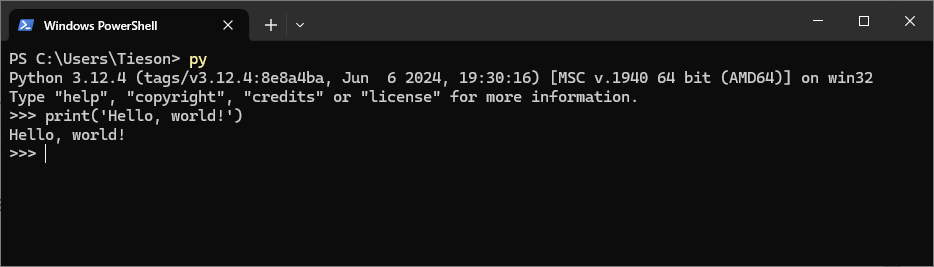

Creating Your First Program
One major advantage to using Python as an introductory course is that it’s really easy to get instant feedback — Python can be executed from the command line (console) without starting up a code editor.
- Start your operating system’s console application. For Windows users, this can be the command line (cmd), Powershell, or the Terminal application. For Linux and macOS users, this will (normally) be the Terminal application.
- Switch to “Python mode” by typing
py. You should see something similar toPython 3.12.4 (tags/v3.12.4:8e8a4ba, Jun 6 2024, 19:30:16) [MSC v.1940 64 bit (AMD64)] on win32 Type "help", "copyright", "credits" or "license" for more information. >>> - Type the following line of code at the prompt (
>>>), and then press Enter:print('Hello, world!')Your terminal will print the quoted value ‘Hello, world!’. Congratulations! You’ve written and executed your first Python program!

Breaking Down the Example
For the example above, you were asked to enter the following text into a console window:
print('Hello, world!')
This is what’s known as source code (or more commonly, just code). It’s an instruction requesting your computer to execute an action; in this case, to
output a series of characters to the console window in which the code was entered. This “series of characters” is referred to as a string when creating Python
code, and is denoted by the opening and closing quotation marks. In Python, both single-quotes (') and double-quotes (") are acceptable when creating strings.
The text which surrounds our string, print( ) is what’s known as a function. In simple terms, it’s a command which is defined as part of the Python language
and which outputs the given content (the value entered after the ( character and before the ) character) to the console window. You will learn more built-in
functions as you progress through your Python course, and eventually learn how to create your own.